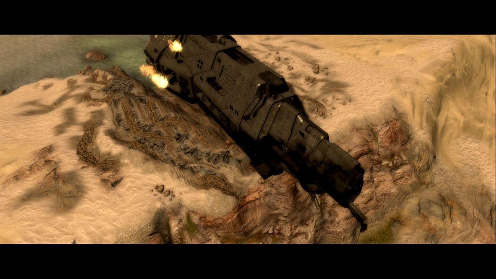
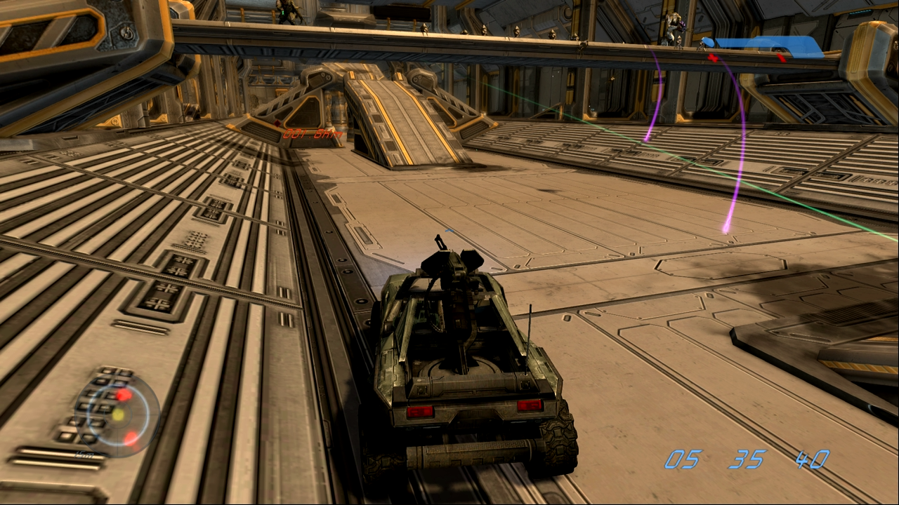

Mergi la inceput
Mergi inapoi
The Maw
Master Chief și Cortana se întorc la epava navei Pillar of Autumn pentru a activa reactorul nuclearal navei
și a distruge Halo. În timp ce navighează prin coridoarele infestate de Flood și patrulate de Covenant,
ei declanșează suprasarcina reactorului. În ultimele momente, Guilty Spark încearcă să oprească autodistrugerea,
dar Master Chief reușește să o finalizeze. Misiunea culminează cu o secvență memorabilă de evadare cu un Warthog,
în timp ce explozia navei distruge inelul. Cortana și Master Chief scapă în ultima clipă la bordul unei navete.


Ultimul cutscene al jocului